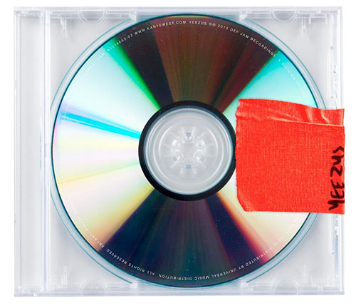
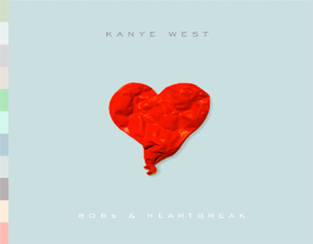
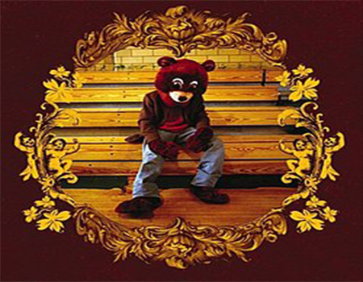
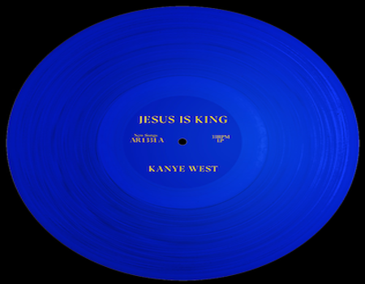
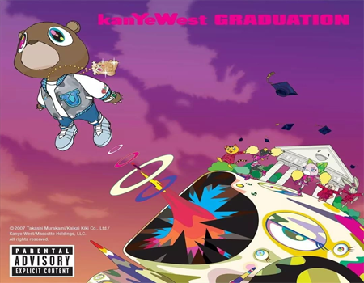

Yezzus
Yeezus fue lanzado en el año 2013, considerado uno de los albumes mas audaces de Kanye, Yeezus es una explosión de sonidos, combinando lo electronico y el hip-hop. El album rompe con lo tradicional, dando nuevos sonidos, experimentando en un area "arriesgada". Las letras son directas, confrontativas, hablando temas como lo es la fama, raza y el poder.
Ahora una lista de sus mejores temas:
- On Sight
- Bound 2
- Nes slaves
- Guil Trip
808s & Heartbreak
Despues de unas tragedias que sufrio Kanye en 2008, saco 808s & Heartbreak, un álbum melancolico, algo triste y hasta experimental. El album marco un antes y un despues en el hip-hop. Kanye usa mucho lo que es el auto-tune (el lo usa como herramienta para expresar el dolor que sentia en el momento). El album explora temas como la soledad, el desamor y la perdida.
Ahora una lista de sus mejores temas:
- Say you will
- Heartless
- Amazing
- Love Lockdown
The College Dropout
The College Dropout fue lanzado en 2004, el álbum debut de Kanye West, su prmimer álbum lo llevo a la fama como productor y rapero. The College Dropout esta lleno de samples soul, ritmos contagiosos, con letras que llegan y aborda temas como lo es la educación, el sonsumismo y la fé (con un toque de humor y autocritica).
Ahora una lista de sus mejores temas:
- We Don´t Care
- All Falls Down
- Spaceship
- Jesus Walk
JESUS Is King
Jesus Is King fue lanzado en 2019, este album fue una gran desviacion a lo que tenia acostumbrado Kanye, abarcando temas como es la religión, Dios, la Iglesia y el cristianismo. Este álbum nos dejo una versión diferente de Kanye, aunque duro poco su tiempo en este tipos de ritmos tipos gospel, nos dejo uno de sus mejores albumes.
Ahora una lista de sus mejores temas:
- Ever Hour
- Follow God
- God Is
- Hands On
Graduation
Graduation fue lanzado en 2007, este fue el tercer álbum de Kanye el cual es una celebracion sobre su exito en su momento. Graduation se caracteriza por su sonido tan calido y alegre, con sintetizadores y samples inspirados en el rock y música electrónica. Abarca temas como su estatus de superestrella global y su exito, dejandolo como uno de los albumes mas conocidos a traves del mundo.
Ahora una lista de sus mejores temas:
- Champion
- I Wonder
- Good Life
- Stronger